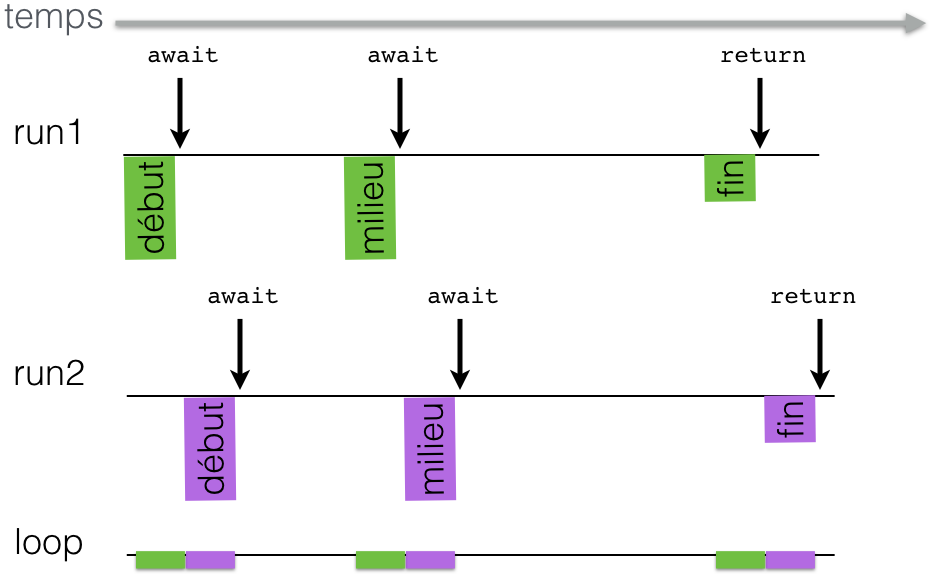
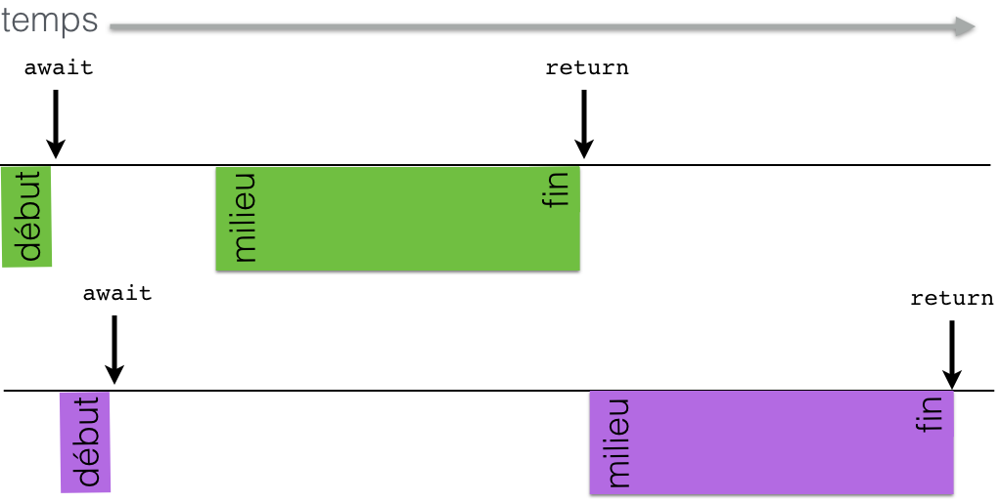

Licence CC BY-NC-NDThierry Parmentelat
premiers exemples¶
La dernière fois nous avons vu des
généralités sur la programmation
asynchrone, et nous avons dit que la
librairie asyncio était un bon candidat
pour ça. Dans cette vidéo nous allons
faire tourner quelques exemples pour
illustrer les concepts de base.
Pour commencer bien entendu j’ai besoin
d’importer le module asyncio
import asyncio
coroutine¶
Voyons d’abord la notion de coroutine; c’est quoi une coroutine ? à la base cela ressemble beaucoup à une fonction, mais dont on sait qu’elle va faire son traitement en plusieurs segments de code séquentiels.
En voici un exemple; on commence par
définir la coroutine presque comme une
fonction mais avec async def au lieu
de simplement def
Cette coroutine est aussi simple que possible, elle fait un traitement en trois morceaux, qui impriment respectivement ‘debut’, ‘milieu’ et ‘fin’, et on simule des temps morts entre ces trois morceaux.
Il faut surtout remarquer la nouvelle
directive await, qui nous permet
d’indiquer les étapes du traitement où
on sait qu’un délai est attendu - ici
j’utilise la coroutine asyncio.sleep()
qui nous permet d’attendre pendant un
temps fixe; dans la vraie vie, on va plutôt attendre un
événement, du genre que des données
soient prêtes en lecture, on verra
d’autres exemples tout à l’heure.
async def morceaux(message):
# on appelle le code synchrone normalement
print(message, "début")
# avec await on rend la main
await asyncio.sleep(0.5)
print(message, "milieu")
await asyncio.sleep(1)
print(message, "fin")
return f'{message} par morceaux'
coroutines¶
Avant de vous montrer ce qu’on peut en
faire, tout d’abord regardons l’objet
morceaux, il s’agit bien d’une
fonction, jusque là tout va bien.
# la fonction coroutine
morceaux
<function __main__.morceaux(message)>
Si j’appelle cette fonction, comme on pourrait avoir envie de le faire
# retourne un objet coroutine
morceaux("run")
<coroutine object morceaux at 0x7f22aa48d840>
comme vous le voyez, il ne se passe rien de ce qu’on attendait, l’appel retourne immédiatement, et rien n’est imprimé.
Le résultat de cet appel est un objet de type coroutine; une des façons d’exploiter un objet de ce type est de l’inclure dans une boucle d’événements, comme ceci
# depuis un notebook, j'exécute un objet coroutine
# avec l'instruction await
await morceaux('run')
run début
run milieu
run fin
'run par morceaux'
Note - cette façon de faire ne fonctionne que avec Jupyter ou IPython
Mais bon ça n’est pas crucial du tout, et pour ne pas tout embrouiller je suppose dans la suite que tout le monde utilise IPython ou Jupyter
plusieurs traitements¶
Naturellement avec une seule coroutine ça n’est pas très impressionnant. Voyons tout de suite ce que ça donne avec plusieurs traitements en parallèle.
Pour cela je vais utiliser une coroutine
fournie par la librairie, qui s’appelle
gather.
Elle est très importante, car elle prend
en arguments plusieurs coroutines, et
renvoie la liste des résultats. C’est
donc ce qu’il nous faut pour exécuter
deux instances de la coroutine morceaux
en parallèle.
await asyncio.gather(morceaux("run1"), morceaux("run2"))
run1 début
run2 début
run1 milieu
run2 milieu
run1 fin
run2 fin
['run1 par morceaux', 'run2 par morceaux']
Remarquez bien, quand j’ai évalué la cellule précédente, les deux segments de 3 morceaux sont bien exécutés en parallèle, c’est-à-dire plus ou moins en même temps, les deux début, puis les deux milieu, etc..

boucle d’événements¶
Pour faire le lien avec ce qu’on avait vu dans la première séquence, voici comment ça se passe en termes de chronologie.
Cachée derrière la scène, il y a une “boucle d’événements” - event loop - qui fait le “chef d’orchestre”; c’est en fait exactement comme le scheduler de l’OS, mais au lieu de donner la main à des threads, elle gère - disons pour simplifier à ce stade - des coroutines.
Ici en l’occurrence le job de la boucle d’événements c’est de faire avancer les deux coroutines.
Au début naturellement, il n’est
pas possible de savoir à coup sûr
laquelle des deux coroutines sera
appelée en premier, puisqu’elles sont
censées se dérouler en même temps, on en
choisit donc une au hasard. Ce qui est
important, c’est qu’une fois qu’on est
entré dans disons run1, cette
coroutine ne va garder le processeur
que jusqu’à ce qu’elle rende la main
explicitement en faisant await
À ce stade, run1 est mise en standby -
avec tout son contexte d’exécution - et
le scheduler cherche ensuite une autre
coroutine à qui donner la main. Dans
notre cas il se trouve que run2 est
prête, on l’exécute donc également, mais
à nouveau jusqu’à rencontrer un
‘await’. À ce stade on a exécuté les
deux débuts, pas tout à fait en même
temps mais coup sur coup, et on a mis de
coté les deux coroutines, avec leur
état, prêtes à être réactivées.
Après le délai qui est codé en dur dans
ce petit exemple, la boucle se rend
compte que run1 devient prête à
reprendre, on lui passe la main, puis à
run2, etc. jusqu’à rencontrer un
return; une fois que les coroutines
sont toutes terminées, la coroutine
gather est terminé également et la boucle d’événements nous rend la main.
Une première chose à remarquer, on l’a dit dans la séquence précédente, c’est que tout ceci est executé dans un seul thread, et donc aucun des blocs que j’ai dessinés ici ne peut être interrompu une fois qu’il a commencé.
Et ça c’est très important, parce que ça
veut dire que je vais pouvoir me
débarrasser de tout un tas de problèmes
que j’aurais eus si j’avais utilisé des
threads; quand on utilise plusieurs
threads, c’est l’OS qui fait la
commutation, du coup ça peut arriver n’importe
quand, et ça crée des besoins d’accès
exclusifs à certains objets; c’est toute
une famille de problèmes qui sont
beaucoup moins sévères avec asyncio.
ce qu’il ne faut pas faire¶
Mais ce que ça veut dire aussi, c’est
qu’il ne faut pas garder le processeur
trop longtemps sans rendre la main avec
un await. Voyons ça sur une version
légèrement différente de notre coroutine
morceaux, que je renomme en famine parce qu’elle ne favorise pas un juste accès aux ressources pour tout le monde
elle fait presque
comme morceaux, mais j’ai remplacé un
await sleep(1) par un appel bloquant à
time.sleep(1), qui est un appel
synchrone. Du coup on n’a plus 3 petits
fragments, mais 1 petit et un gros de 1
seconde.
import time
async def famine(message):
print(message, "début")
# avec await on rend la main
await asyncio.sleep(0.5)
print(message, "milieu")
# on garde la main au lieu de la rendre
time.sleep(1)
print(message, "fin")
return f'{message} par famine'
famine en action¶
Si on fait tourner ça, on observe que les impressions ne sont plus aussi bien mélangées entre les deux coroutines
await asyncio.gather(famine("run1"), famine("run2"))
run1 début
run2 début
run1 milieu
run1 fin
run2 milieu
run2 fin
['run1 par famine', 'run2 par famine']
chronologie¶
dans cette version, chacune des deux coroutines garde la main entre les deux impressions de milieu et de fin
du coup lorsque run1 obtient la main pour imprimer son message milieu, elle la garde jusquà la fin de son travail, et c'est seulement à ce moment-là que run2` pourra faire sa deuxième moitié
si bien qu’au lieu que le tout dure environ 1.5 secondes comme avec morceaux, ici avec famine le tout prend environ 2.5 s

Dit comme ça c’est évident, mais dans la pratique ce type de comportement se produit plus souvent qu’on ne voudrait, ça n’est pas toujours facile de se rendre compte que c’est ce qui se passe, mais quand ça arrive ça a un gros impact sur la réactivité de votre application.
Donc il faut être en permanence en train de s’assurer qu’on rend la main dès qu’on peut.
Vous pouvez toujours insérer une
instruction comme await asyncio.sleep(0)
où vous voulez pour faire respirer votre
code.
conclusion¶
Pour récapituler cette séquence, on a vu que
. on écrit le code asynchrone sous forme
de coroutines; on crée une fonction coroutine avec async def, et sinon le code se présente presque
comme des fonctions - et donc qui
peuvent implémenter n’importe quelle
logique
. on peut appeler une coroutine depuis
une autre coroutine grâce à await
. une coroutine peut bien entendu appeler une fonction traditionnelle, en faisant attention à ne pas bloquer trop longtemps
. on peut exécuter une ou plus généralement plusieurs coroutines en parallèle par l’intermédiaire d’une boucle d’événements
annexe : les 1000 façons de lancer du code asynchrone¶
Note !! pour y revenir plus tard en cas de souci
Comme on l’a vu plus haut, pour exécuter comme on l’a fait une coroutine depuis le toplevel avec await, cela ne marche que avec IPython et les notebooks
pour lancer du code asynchrone depuis le toplevel Python¶
par contre ça ne marchera pas tel quel dans l’interpréteur Python normal, vous obtiendriez ça
>>>
>>> await morceaux('depuis python')
File "<stdin>", line 1
SyntaxError: 'await' outside function
pour pouvoir faire comme ça un await au toplevel dans l’interpréteur Python, vous devez lancer l’interpréteur avec l’option -m asyncio
$ python -m asyncio
asyncio REPL 3.9.1 (default, Dec 11 2020, 06:28:49)
[Clang 10.0.0 ] on darwin
Use "await" directly instead of "asyncio.run()".
Type "help", "copyright", "credits" or "license" for more information.
>>>
...
>>> await morceaux('avec python -m asyncio')
avec python -m asyncio début
avec python -m asyncio milieu
avec python -m asyncio fin
'avec python -m asyncio par morceaux'
il y a une autre façon de faire qui marche avec Python sans option, c’est en utilisant asyncio.run() :
$ python
Python 3.9.1 (default, Dec 11 2020, 06:28:49)
[Clang 10.0.0 ] :: Anaconda, Inc. on darwin
Type "help", "copyright", "credits" or "license" for more information.
>>> import asyncio
...
>>> asyncio.run(morceaux('avec asyncio.run()')
... )
avec asyncio.run() début
avec asyncio.run() milieu
avec asyncio.run() fin
'avec asyncio.run() par morceaux'
enfin sachez qu’en fait ce qui se passe avec ces méthodes qui sont en fait des raccourcis, c’est quelque chose dans le genre de ceci
>>> loop = asyncio.new_event_loop()
>>> loop.run_until_complete(morceaux('avec run_until_complete'))
avec run_until_complete début
avec run_until_complete milieu
avec run_until_complete fin
'avec run_until_complete par morceaux'